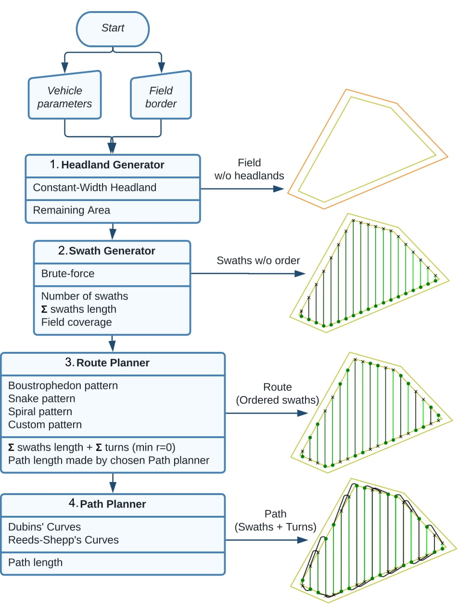

Fields2Cover
Robust and efficient coverage paths for autonomous agricultural vehicles
The github repository is here.
The Coverage Path Planning problem (CPP) aims to create a path to cover an area with one or several vehicles.
{kind=link}
Although the development of this project is focused on offline planning of agricultural vehicles, the library accepts pull requests from other types of coverage planners.
Citing
Please cite the following paper when using Fields2Cover for your research:
@article{Mier_Fields2Cover_An_open-source_2023,
author={Mier, Gonzalo and Valente, João and de Bruin, Sytze},
journal={IEEE Robotics and Automation Letters},
title={Fields2Cover: An Open-Source Coverage Path Planning Library for Unmanned Agricultural Vehicles},
year={2023},
volume={8},
number={4},
pages={2166-2172},
doi={10.1109/LRA.2023.3248439}
}
More information
Contribute
If you find any issue/bug/proposal, open an issue and we will try to solve/discuss it.
Pull requests are more than welcome. For major changes, please open an issue first to discuss what you would like to change. Please make sure to update tests as appropriate.
License
Fields2Cover project is under BSD-3 license.